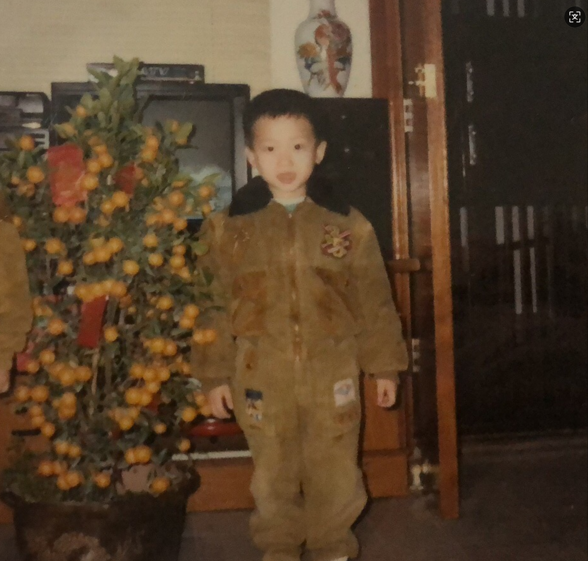

我的出身
让我相信性格这种东西是天生的是，据我的家人描述，我还没记事的时候就只喜欢一个人呆着，拿着辆玩具车坐在那推来推去推一整天，以至于有时候他们照顾我时可以不小心睡着也不用担心。当然这并不是一个好的征兆，所以他们尝试带我去看医生，确认我是不是傻的。最后还去问了一个算命的，算命先生说了句："你们才傻呢！"

↑↑↑ 看看我这高耸的大额头，应该不至于傻吧
让我相信性格这种东西是天生的是，据我的家人描述，我还没记事的时候就只喜欢一个人呆着，拿着辆玩具车坐在那推来推去推一整天，以至于有时候他们照顾我时可以不小心睡着也不用担心。当然这并不是一个好的征兆，所以他们尝试带我去看医生，确认我是不是傻的。最后还去问了一个算命的，算命先生说了句："你们才傻呢！"